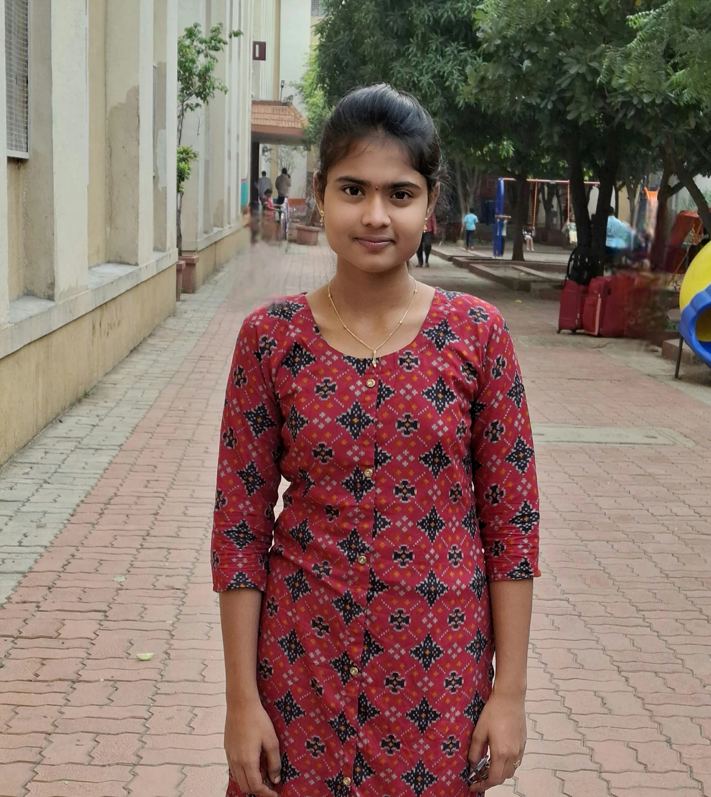

QUICK LEARNER
Hi, I'm Neelima
Myself a Computer Science student passionate about
technology and problem-solving.
This is my portfolio where I share my projects, skills, and
learning journey as I grow and explore new ideas.
Let’s Go ↓

About Me
I am currently pursuing B.Tech in Computer Science and Engineering at Pragati Engineering College, Surampalem, Kakinada, with a CGPA of 9.1.
I completed my Intermediate at Narayana Junior College Kakinada with 98.5%.
SSC from Pragati English Medium School, Kakinada with 99%.
I achieved an EAMCET rank of 14000.
I come from a nuclear family – my father Nanaji Nakka, my mother Nakka Mahalakshmi, and my younger brother Nakka Hemanth.
My hobbies include listening to music. I'm passionate about learning and growing.
Skills
Projects
Contact Me
Email: neelimanakka2006@gmail.com
Phone: +91-9949904497
LinkedIn: https://www.linkedin.com/in/neelima-nakka-b2b342b8/
GitHub: https://github.com/Neelimanakka